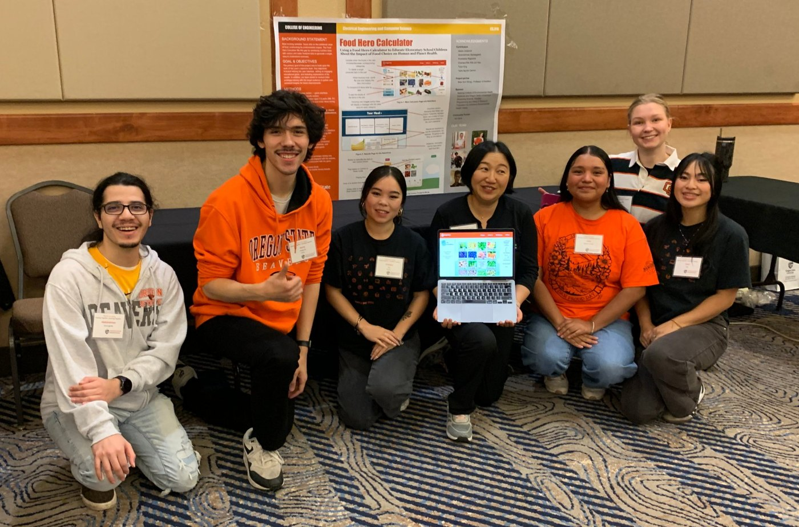

About Me
I'm Aaron, a Computer Science graduate with a focus in Data Science and a strong interest in software, sustainability, and emerging technology.
What I'm Interested In
I'm especially interested in how software, data, artificial intelligence, and other emerging technologies can be used to build a more sustainable and capable future.
What I'm Building Toward
I want to continue developing as a software engineer while building projects that combine technical depth with problems that actually matter.

Personal Info and Background
I'm originally from The Dalles, Oregon, where I grew up before moving to Corvallis to attend Oregon State University and study Computer Science. At first, I actually intended to study electrical engineering, but I quickly realized that I was much more interested in software and data science, so I made the switch during my first year.
I really loved living in Corvallis, but after graduating, I decided to move to Portland to pursue opportunities in the tech industry while also being closer to my identical twin brother.
And yes, fun fact: I have an identical twin! Although, if you ask me, we don't look THAT much alike. It is strange, though, looking at him and realizing that we have the same face. Sometimes, I feel like he doesn't look anything like me. Regardless, he has thankfully dyed his hair blonde, so we look quite a bit more different now.
He attended Portland State University, where he studied Public Health Science, which isn't quite as cool as OSU and Computer Science, obviously. The photo here was taken after we had both graduated from college, following his graduation ceremony. It was definitely a proud moment for both of us.

My Time at Oregon State
From fall 2022 until I graduated in March 2026, Oregon State University in Corvallis was home, and I loved it there. I earned my B.S. in Computer Science through the Applied Computer Science option, with a focus in Data Science.
I enjoyed nearly every corner of computer science, from operating systems to databases to mobile apps, but data science and machine learning are what hooked me most. I love taking messy, real-world data and turning it into something you can actually learn from, which is exactly why I chose Data Science as my focus.
I also worked close to full-time through all of college to support myself, without any outside financial help. My time was always split between coursework and a full work week, which wasn't easy, but it taught me how to manage my time, stay organized, and follow through when things get busy.
My Favorite Class: Machine Learning
Machine Learning & Data Mining (CS 434) was my favorite class at OSU. It covered both how machine learning algorithms work and how to tell whether their predictions will actually hold up on new data. Through programming assignments, I implemented k-nearest neighbors, linear models for regression and classification, Naive Bayes, neural networks, decision trees, and k-means clustering.
Senior Capstone
For my senior capstone, I was part of a six-person team that worked with Professor Siew Sun Wong of the OSU Extension Service on the Food Hero Calculator, a web app that teaches kids how their food choices affect both their health and the planet. We tested our prototype with kids from OSU's KidSpirit program, and in May 2025 we presented our work at a poster session at the OSU Extension Family and Community Health annual conference in Bend.
OSU Extension later wrote an article about the project, where I'm quoted on one of our biggest lessons from testing with kids: "We found that children don't like big chunks of text."
Read the OSU Extension article →Data Science Focus
The core classes of my Data Science focus:
- Machine Learning & Data Mining (CS 434)
- Database Management Systems (CS 440)
- Scientific Visualization (CS 453)
- Parallel Programming (CS 475)
- Mathematical Statistics (ST 421)
- Linear Algebra (MTH 341)
Classes That Became Projects
- Databases (CS 340): my full-stack database project became Unreal Coffee.
- Mobile Development (CS 492): our team's Android game, Higher or Lower.
- Operating Systems II (CS 474): writing kernel code in C on xv6, including virtual memory and traps.

My Hobbies!
I love software and technology and all, but I also have many hobbies outside of it, including: I spend much of my free time reading, running and cycling, exercising, playing chess, and, whenever I get the opportunity, surfing.
Reading
I generally read philosophy books and other interesting literature. I've always felt that if I didn't have such a strong pull toward software engineering, I would've studied philosophy instead.
Chess
I've loved chess ever since I was a kid, and I grew "somewhat" obsessed as a teenager. Anytime I'm stressed, though, playing a quick game puts me in a better mood.
Cycling
I love cycling with a passion. It has served as my main form of transportation for most of my life, but it has also just been a great form of daily exercise. Can't recommend it enough.
Surfing
I've only been surfing periodically, but I absolutely love it and hope I can do it more often soon.
Training
I'm a firm believer in physical exercise and the positive effects it has on the body (obviously), but even more so on the mind (at least for me).
Running
Running always helps me de-stress and forces me to calm down stressful thoughts and be in the present moment. If I'm not doing enough cycling, I'll definitely make up for it by running at the gym.